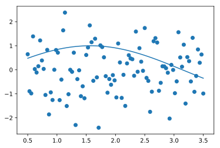
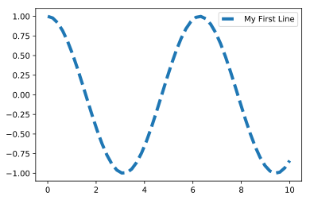
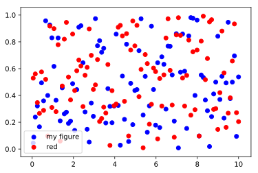
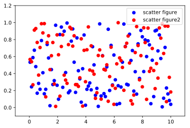
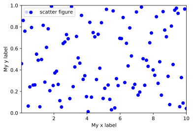
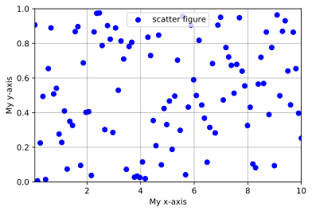
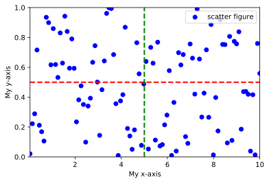

数据可视化¶
matplotlib¶
这里我们介绍python中进行简单数据可视化的方法，使用的工具是python中最基础的matplotlib库。
Matplotlib图表组成¶
我们通过一个例子来看一张Matplotlib图表是如何绘制的。
画图的第一步是准备数据，数据可以手动输入，也可以通过文件进行导入，本节内容较为简单，暂时采用手动输入的形式，关于数据的导入方法，可参考pandas相关教程。
为了处理数据和绘图，我们首先导入第三方包Numpy和快速绘图模块pyplot，其中科学计算包Numpy是matplotlib库的基础，也就是说，matplotlib库是建立在Numpy库基础上的Python绘图库。
import numpy as np
import matplotlib.pyplot as plt
现在我们就可以定义一些完成绘图所需的数据了，例如
x = np.linspace(0.5,3.5,100) # 在0.5到3.5之间均匀地取100个数
y = np.sin(x) # 求出每一个数对应的正弦值
y1 = np.random.randn(100) # 在标准正态分布中随机地取100个数
然后开始绘图
plt.plot(x,y) # 绘制(x,y)
plt.scatter(x,y1) # 绘制(x,y1)

下面我们通过函数的形式来学习绘图，反过来，再用绘图的形式来强化对函数的记忆。
函数 plot() ——展现变量的变化趋势¶
- 函数功能：展现变量的变化趋势
- 调用方法：
plt.plot(x,y,ls='-',lw=2,label='plot figure') - 参数说明
x: x轴上的数值y: y轴上的数值ls: linestyle,折线的线条风格lw: linewidth,折线的线条宽度label: 标记图形内容的标签文本
x = np.linspace(0,10,50) # 生成从0.05 到 10 等分的1000个数据
y = np.cos(x) # 计算x的余弦值
plt.plot(x,y,ls='--',lw=3,label='My First Line') # 线性为虚线--，线宽为6，标签为'My first line'
plt.legend() # 显示图例，不加这一句则不显示图例

如果想了解更多 plot 参数，可以使用 help() 方法获取帮助。
help(plt.plot)
函数 scatter() ——寻找变量之间的关系¶
- 函数功能：散点图，寻找变量之间的关系
- 调用方法：
plt.scatter(x,y,c='b',label = 'scatter figure') - 参数说明
x: x轴上的数值y: y轴上的数值c: 散点图中的标记颜色label: 标记图形内容的标签文本
x = np.linspace(0.05,10,100) # 生成从0.05 到 10 等分的100个数据
y = np.random.rand(100) # 生成100个正态分布的随机数
plt.scatter(x,y,c= 'b',label='my figure')
y1 = np.random.rand(100) # 生成100个正态分布的随机数
plt.scatter(x,y1,c= 'r',label='red')
plt.legend()

设置x轴的数值显示范围函数 xlim¶
- 函数功能：设置x轴的数值显示范围
- 调用方法：
plt.xlim(xmin,xmax) - 参数说明
xmin: $x$轴上的最小值xmax: $x$轴上的最大值- 同样的方法可以用在
plt.ylim()上
x = np.linspace(0.05,10,100) # 生成从0.05 到 10 等分的100个数据
y = np.random.rand(100)# 生成100个正态分布的随机数
y1 = np.random.rand(100) # 生成100个正态分布的随机数
plt.scatter(x,y,c= 'b',label='scatter figure') # 绘制第一组数据
plt.scatter(x,y1,c= 'r',label='scatter figure2') # 绘制第二组数据
plt.legend() # 增加图例
plt.xlim(-1,11) # 设置x轴显示范围
plt.ylim(-0.1,1.2) # 设置y轴显示范围

Warning
注意：除非特殊情况，不推荐大家自定坐标轴显示范围。因为这可能会导致后续数据改变以后，图像变得很奇怪。
函数 xlabel() ——设置x轴的标签文本¶
- 函数功能：设置x轴的标签文本
- 调用方法：
plt.xlabel(string) - 参数说明
string: 标签文本内容- 同样的方法可以用在
plt.ylabel()上
x = np.linspace(0.05, 10, 100) # 生成从0.05 到 10 等分的100个数据
y = np.random.rand(100) # 生成100个正态分布的随机数
plt.scatter(x, y, c='b', label='scatter figure') # 绘图
plt.legend() # 增加图例
plt.xlim(0.05, 10) # 设置x轴显示范围
plt.ylim(0, 1) # 设置y轴显示范围
plt.xlabel('Time') # 设置x轴标签
plt.ylabel(r'$v_1$') # 设置y轴标签

函数 grid() ——绘制刻度线的网格线¶
- 函数功能：绘制刻度线的网格线
- 调用方法：
plt.grid(linestyle = ':', color = 'r') - 参数说明
linestyle: 网格的线条风格color: 网格的线条颜色
x = np.linspace(0.05,10,100)
y = np.random.rand(100)
plt.scatter(x,y,c= 'b',label='scatter figure')
plt.legend()
plt.xlim(0.05,10)
plt.ylim(0,1)
plt.xlabel('My x-axis')
plt.ylabel('My y-axis')
plt.grid(linestyle = '-', color = 'black',alpha = 0.3) # 增加刻度线

当然，如果需要的话，更多的参数设置方法，你也可以通过 help() 去查看
help(plt.grid)
函数 axhline() ——绘制平行于x轴的水平参考线¶
- 函数功能：绘制平行于x轴的水平参考线
- 调用方法：
plt.axhline(y=0.0,c='r',ls='--',lw=2) - 参数说明
y: 水平参考线的出发点c: 参考线的线条颜色ls: 参考线的线条风格lw: 参考线的线条宽度- 上面的函数功能一样可以用到
axvline上
x = np.linspace(0.05,10,100)
y = np.random.rand(100)
plt.scatter(x,y,c= 'b',label='scatter figure')
plt.legend()
plt.xlim(0.05,10)
plt.ylim(0,1)
plt.xlabel('My x-axis')
plt.ylabel('My y-axis')
plt.axhline(y=0.5,c='r',ls='--',lw=2) # 增加水平线
plt.axvline(x=5,c='g',ls='--',lw=2) # 增加垂直线
